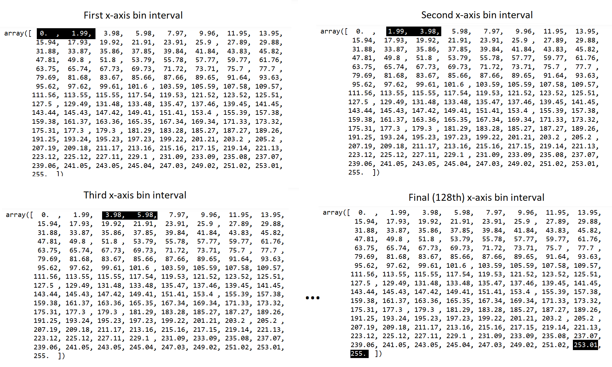
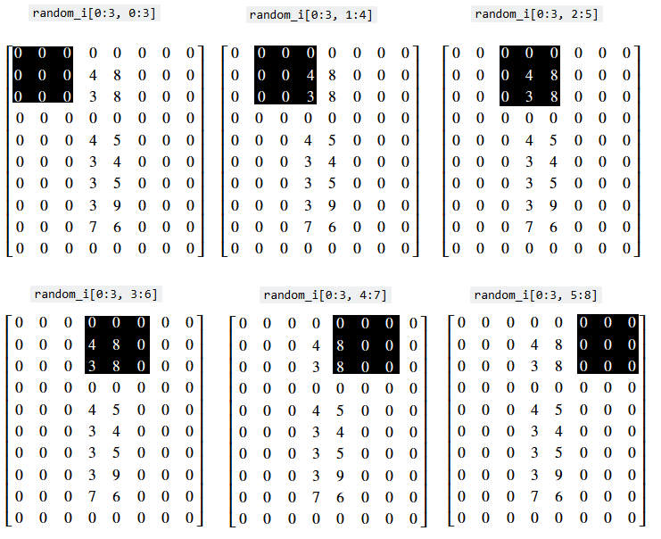
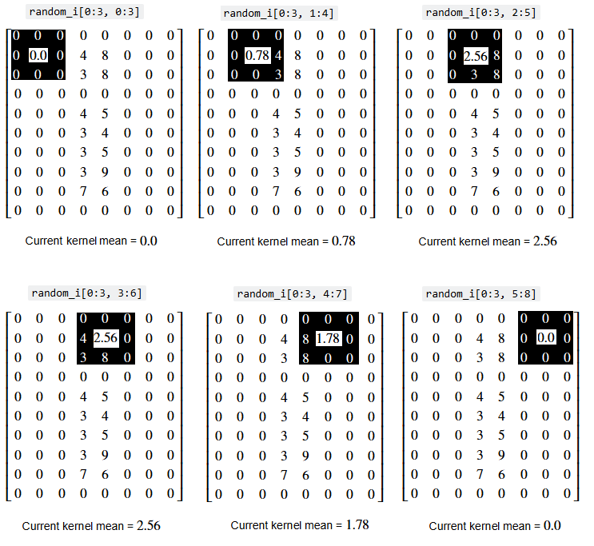
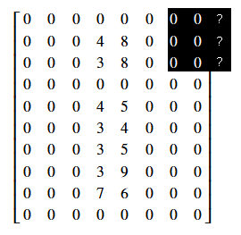
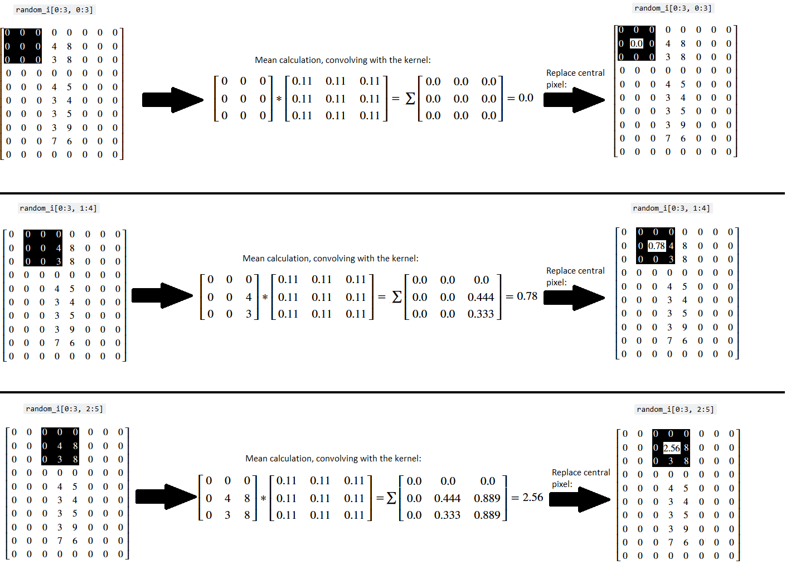
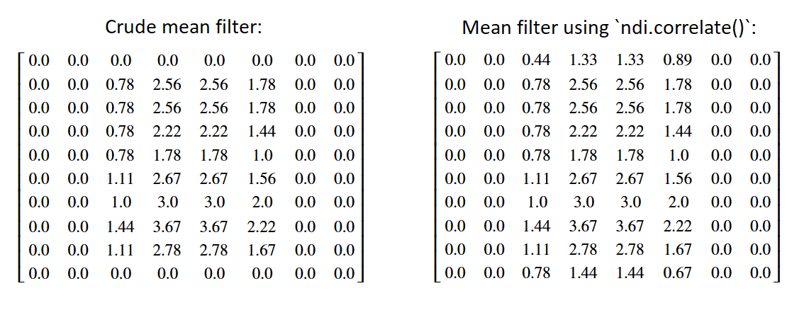

Image filtering I#
A common operation we will want to perform on images is filtering. This is where we modify all of the pixels in an image according to a certain rule or algorithm, often based on other pixel values within the “local neighbourhood” of a given pixel. Filtering techniques can be used to remove noise from an image, or to achieve specific visual effects, amongst other purposes.
Here we will look at some important filtering techniques: threshold filtering and mean filtering. We will show how they work at the pixel-level, using numpy and scipy, and then we will show how to implement them in skimage.
# Library imports.
import numpy as np
import matplotlib.pyplot as plt
import scipy.ndimage as ndi
import skimage as ski
# Set 'gray' as the default colormap
plt.rcParams['image.cmap'] = 'gray'
# Set NumPy precision to 2 decimal places
np.set_printoptions(precision=2)
# Custom functions for illustrations, hints, and to quickly report image attributes.
from noise_illustration import generate_image, original_image
from show_attributes import show_attributes
from hints import hint_strange_coffee
What is signal? What is noise?#
Imagine that I want to send you a picture message. Let’s use “the signal” as the name for the message before I send it to you. Before transmission, the signal has a clear meaning which I am confident you will be able to interpret. However, imagine that I am sending you the message via an unreliable medium; a messaging system that is prone to corrupting messages when transmitting them.
When I send you the message, there is a decent chance that unwanted randomness will be added to the image file, because of technical problems with the transmission medium. This might result in an image which contains so much randomness that it is hard to discern the original signal.
Imagine that the cell below attempts to send my picture message - can you see what the signal is?
# Generate a noisy image array.
noisy = generate_image()
show_attributes(noisy)
plt.imshow(noisy);
Type: <class 'numpy.ndarray'>
dtype: float64
Shape: (7, 7)
Max Pixel Value: 1.0
Min Pixel Value: -0.95

Any idea what it is? Maybe you can determine what signal is in there. We trust that it is at least somewhat ambiguous, to most readers.
We saw simple threshold filtering on an earlier page. This is where we select a threshold value, and binarize the image using that value. So a given pixel becomes True if a pixel is more intense than the threshold, and False if it is lower (or vice versa, depending on the comparison operator).
The aim here is typically to split the pixels into distinct classes, based on their intensity values. We can use the ndarray .ravel() method to view a historgram of the pixel intensities, in order to find a threshold that might be useful to use in a filter. The .ravel() method “flattens” the image array to 1-D, so that it can be displayed as a histogram:
# The `shape` of the original `noisy` image.
noisy.shape
(7, 7)
# Flatten to 1-D with the `.ravel()` method.
noisy.ravel().shape
(49,)
# Show a histogram of the pixel intensity values, from the "flattened" `noisy` array.
plt.hist(noisy.ravel(), bins=12)
plt.xlabel('Pixel Intensity Value')
plt.ylabel('Pixel Count');

Ok, so it looks like the distribution is trimodal. The message is in the float64 dtype, using intensities ranging from -1 to 1. Let’s set a threshold filter for each dip, in between the three peaks, so we’ll try once with a threshold of -0.50, and once with a threshold of 0.25. These threshold values are shown as vertical lines on the plot below:
# Show a histogram of the pixel intensity values, with some thresholds.
plt.hist(noisy.ravel(), bins=12)
plt.axvline(-0.5, color='red', label='Threshold 1')
plt.axvline(0.25, color='darkred', label='Threshold 2')
plt.legend()
plt.xlabel('Pixel Intensity Value')
plt.ylabel('Pixel Count');

The filters are created, using the > comparison operator, in the next two cells:
# The first simple, Boolean threshold filter.
simple_threshold_filter_1 = noisy > -0.50
simple_threshold_filter_1
array([[ True, False, True, True, True, False, True],
[False, True, False, True, False, True, True],
[ True, True, True, True, True, True, True],
[False, True, True, True, True, True, False],
[ True, True, True, True, False, True, True],
[False, True, True, True, True, True, True],
[False, True, False, True, True, True, True]])
# The second simple, Boolean threshold filter.
simple_threshold_filter_2 = noisy > 0.25
simple_threshold_filter_2
array([[False, False, False, False, False, False, False],
[False, True, False, True, False, True, False],
[False, True, False, True, False, False, False],
[False, True, False, True, False, True, False],
[False, True, False, True, False, True, False],
[False, True, False, True, False, True, False],
[False, False, False, False, False, False, False]])
Each threshold filter is just a Boolean array, with the same .shape as the image. When we render these arrays with Matplotlib, we will see a binary image, where True values are mapped to white and False values are mapped to 0.
Because we used the > comparison operator, only pixels larger than the threshold values will be True. Let’s see if this clears up any of the noise:
# Threshold filters.
plt.subplot(1, 2, 1)
plt.title('Threshold = -0.5')
plt.imshow(simple_threshold_filter_1)
plt.subplot(1, 2, 2)
plt.title('Threshold = 0.25')
plt.imshow(simple_threshold_filter_2);

Ok, so the first image still looks very noisy still, but the second looks like we might be getting somewhere. Maybe you can already guess what the original signal was…
Let’s loop through some other threshold values, between just below 0 to just larger than 0.25, to see if the clarity of the signal improves:
# Loop through some different threshold values, and plot the results.
plt.figure(figsize=(14, 4))
n_plots=6
for i, val in enumerate(np.linspace(start=-0.1,
stop=0.25,
num=n_plots)):
plt.subplot(1, n_plots, i+1)
plt.title(f"Threshold =\n {val.round(2)}")
plt.imshow(noisy > val)
plt.axis('off')

We hope you feel suitably greeted! The threshold of 0.18 seems to reveal what signal was originally in this image, before the unwanted random noise was added, by the faulty transmission system.
Here we have recovered a signal from a noisy image, and made the features in the image easier to discern. You’ll notice that we had to try numerous threshold values to find the “sweet spot” with the best results. Other values “overshoot” and “undershoot” the optimum value.
Here was the original image, before the noise was added:
plt.imshow(original_image());

Reducing noise and enhancing image features are both common aims in image filtering. Both processes often require some trial and error with different values for optional arguments that go into the filtering operation, as it did here. We will now turn to some other common methods for threshold filtering, using a variety of other images.
Threshold Filtering#
As we have seen, threshold filtering invovles modifying pixel values based on a threshold value. Let’s investigate other thresholding methods using a greyscale image:
# Create a greyscale image array.
random_i = np.array([[0, 0, 0, 0, 0, 0, 0, 0],
[0, 0, 0, 4, 8, 0, 0, 0],
[0, 0, 0, 3, 8, 0, 0, 0],
[0, 0, 0, 0, 0, 0, 0, 0],
[0, 0, 0, 4, 5, 0, 0, 0],
[0, 0, 0, 3, 4, 0, 0, 0],
[0, 0, 0, 3, 5, 0, 0, 0],
[0, 0, 0, 3, 9, 0, 0, 0],
[0, 0, 0, 7, 6, 0, 0, 0],
[0, 0, 0, 0, 0, 0, 0, 0]])
print(random_i)
plt.imshow(random_i);
[[0 0 0 0 0 0 0 0]
[0 0 0 4 8 0 0 0]
[0 0 0 3 8 0 0 0]
[0 0 0 0 0 0 0 0]
[0 0 0 4 5 0 0 0]
[0 0 0 3 4 0 0 0]
[0 0 0 3 5 0 0 0]
[0 0 0 3 9 0 0 0]
[0 0 0 7 6 0 0 0]
[0 0 0 0 0 0 0 0]]

As we saw above, it is simple to create a Boolean filter, using the > comparison operator:
# Create a Boolean array using a comparison operator.
random_i_thresholded = random_i > 5
print(random_i_thresholded)
plt.matshow(random_i_thresholded);
[[False False False False False False False False]
[False False False False True False False False]
[False False False False True False False False]
[False False False False False False False False]
[False False False False False False False False]
[False False False False False False False False]
[False False False False False False False False]
[False False False False True False False False]
[False False False True True False False False]
[False False False False False False False False]]

This filters out pixels below the threshold value (5), by setting them to 0/False. Different threshold values will allow more or less pixels to “survive” the filtering operation:
# A sole survivor!
random_i_filtered_9 = random_i >= 9
print(random_i_filtered_9)
plt.matshow(random_i_filtered_9);
[[False False False False False False False False]
[False False False False False False False False]
[False False False False False False False False]
[False False False False False False False False]
[False False False False False False False False]
[False False False False False False False False]
[False False False False False False False False]
[False False False False True False False False]
[False False False False False False False False]
[False False False False False False False False]]

Image segmentation via threshold filtering#
This threshold filtering technique can be useful for segregating the foreground from the background of real images, like camera:
# Import the `camera` image from `ski.data`.
camera = ski.data.camera()
# Show the "raw" `camera` array.
print(camera)
# Show `camera` graphically.
plt.imshow(camera);
[[200 200 200 ... 189 190 190]
[200 199 199 ... 190 190 190]
[199 199 199 ... 190 190 190]
...
[ 25 25 27 ... 139 122 147]
[ 25 25 26 ... 158 141 168]
[ 25 25 27 ... 151 152 149]]

We can again use the NumPy .ravel() method of the camera array to allow us to view a histogram of the pixel intensities. We set the number of bins (\(x\)-axis intervals) for the histogram to be 128, to keep the plot looking smooth:
# Plot a histogram of the `camera` pixel intensities, with 128 bins.
n_bins = 128
histogram = plt.hist(camera.ravel(), bins=n_bins)
plt.xlabel('Pixel Intensity Value')
plt.ylabel('Pixel Count');

The “bins” are the intervals along the \(x\)-axis in which pixel intensity values are counted to determine the height of the blue “hills” in the histogram above, within a given interval. It is important, when thresholding, to choose a sensible number of bins. Too few or too many and we will miss important information, because we are cramming way too many or too few pixels into each interval, respectively.
The plot below shows the camera pixel intensities, with too few and too many bins. The bin intervals starts and ends are indicated with vertical red lines. The height on the histogram, for a given bin, is determined by the Pixel Count falling with the range of intensities for that bin:
# Some plot formatting parameters (to show the bins).
marker = '|'
color = 'red'
markersize = 40
# Too few bins...
plt.figure(figsize=(16, 4))
n_bins_few = 4
plt.subplot(1, 2, 1)
histogram = plt.hist(camera.ravel(), bins=n_bins_few)
plt.title(f"{n_bins_few} bins. Too few!")
plt.xlabel('Pixel Intensity Value')
plt.ylabel('Pixel Count')
colours=['red', 'yellow']
for val in histogram[1]:
plt.plot(val, 0, marker=marker,
color = "red", markersize=markersize,
markeredgewidth=8)
# Too many bins...
n_bins_many = 200
plt.subplot(1, 2, 2)
plt.title(f"{n_bins_many} bins. Too many!")
histogram = plt.hist(camera.ravel(), bins=n_bins_many)
plt.xlabel('Pixel Intensity Value')
plt.ylabel('Pixel Count')
for val in histogram[1]:
plt.plot(val, 0, marker=marker, color = "red", markersize=markersize);

128 bins gives us a good middle ground, where we can see patterns in the distribution easily, without losing information or overemphasising unrepresentative values. Using the sensible number of bins, the distribution is clearly tri-modal, with a clear dip/separation around between 50 and 100-ish, and another just before 200-ish. This locations are indicated on the plot with vertical lines:
# Show some "by eye" thresholds.
plt.hist(camera.ravel(), bins=n_bins)
plt.axvline(80, color='red')
plt.axvline(190, color='darkred')
plt.xlabel('Pixel Intensity Value')
plt.ylabel('Pixel Count');

Let’s use these “by eye” crude threshold values and apply a threshold filter using them. Remember, we are trying to separate the pixels into distinct classes:
# Define a threshold, "by eye".
crude_threshold = 80
# Apply the filter.
camera_threshold_filtered = camera.copy()
camera_threshold_filtered = camera_threshold_filtered < crude_threshold
plt.imshow(camera_threshold_filtered);

That has worked fairly well, as far as it goes, for segmenting the foreground (the cameraman) away from the background (the field and buildings behind the cameraman).
We can show the “opposite” binary image, by reversing the comparison operation:
# Using the "opposite" comparison operator.
plt.imshow(camera > crude_threshold);

Stylish! Someone should put that on a t-shirt…
Threshold filters in skimage#
skimage contains many threshold filters, the cell below uses the dir() function to show the available selection:
# Show the `skimage` threshold filters.
[fil for fil in dir(ski.filters) if fil.startswith('threshold')]
['threshold_isodata',
'threshold_li',
'threshold_local',
'threshold_mean',
'threshold_minimum',
'threshold_multiotsu',
'threshold_niblack',
'threshold_otsu',
'threshold_sauvola',
'threshold_triangle',
'threshold_yen']
These filters typically, when passed an image array, find a threshold value automatically - e.g. at value at which to binarize the image to split the pixels into distinct classes. These distinct pixel classes often correspond to distinct features or regions in the image (cameraman vs field, foreground vs background etc.). The threshold value search performed by the ski.filter.threshold* functions aims to maximize the separation between pixel classes, and the different available functions use different algorithms to identify the “best” threshold value(s).
One simple method, similar to the “look at the histogram” method we just used above, is the Otsu method. This aims to divide pixels into two distinct classes, by mathematically analysing a histogram of the pixel intensities. Below we use the ski.filters.threshold_otsu() function to recommend a threshold value, to segment our image into two pixel classes.
By specifying the nbins argument, we We get .threshold_otsu() to analyse a histogram which has the same number of bins as the one we were using above:
# Pass our `camera` array to the `threshold_otsu()` function.
otsu_thresh = ski.filters.threshold_otsu(camera,
nbins=n_bins)
# Show the Otsu threshold
otsu_thresh
np.int64(102)
We show the otsu_theshold as a vertical line on the histogram:
# Plot the pixel intensities, and the Otsu threshold.
plt.hist(camera.ravel(), bins=n_bins);
plt.axvline(otsu_thresh, color='red', label='Otsu Threshold')
plt.xlabel('Pixel Intensity Value')
plt.ylabel('Pixel Count')
plt.legend();

You can see that the method finds a threshold is pretty close to the one we chose “by eye” earlier on the page. Let’s apply the Otsu filter, simply by using camera < otsu_thresh:
# Filter in the image using the Otsu threshold.
camera_otsu_filtered = camera < otsu_thresh
# Show a plot of the whole Otsu filtering process.
plt.figure(figsize=(14, 3))
plt.subplot(1, 3, 1)
plt.imshow(camera)
plt.title('Original')
plt.subplot(1, 3, 2)
plt.hist(camera.ravel(), bins=n_bins)
plt.xlabel('Pixel Intensity Value')
plt.ylabel('Pixel Count')
plt.axvline(otsu_thresh, color='red')
plt.title('Otsu threshold')
plt.subplot(1, 3, 3)
plt.imshow(camera_otsu_filtered)
plt.title('Otsu filtered')
plt.subplots_adjust();

If you look at the filtered image (on the right hand side of the plot), it seems to have achieved pretty good foreground/background segmentation…
How does the Otsu threshold filter work? Conceptually, the Otsu method involves splitting the histogram into two parts, lots of times, and comparing different splits for how well they separate pixels into two classes, based on a specific numeric metric. The histogram, for each split, is split at the center one of the bin intervals. The aim is to find which bin interval center gives a split which yields two classes of pixels which are maximally different from one another, by the aforementioned numeric metric. Sometimes, hopefully, this corresponds to pixels forming the background of the image vs pixels forming the forground of the image.
Since the Otsu method relies on some the “mechanics” of histograms, so let’s “deconstruct” the histogram in the center of the plot above, to see how the method proceeds. To do this, we can use the np.histogram() function. We give it a flattened 1-D image array (e.g. flattened with .ravel()), and we tell it a number of bins to use. Again, we will use the sensible value of 128 bins. (Note: you could also use ski.exposure.histogram() here, for similar results).
np.histogram() will return two arrays. The first is the pixel count within each bin, so in this case we will get 128 individual numbers, because there are 128 bins. We will call this array counts. These counts determine the height of the histogram over each bin. The first count is for the first bin, the second count is for the second bin, and so on, as we move along the \(x\)-axis from left to right.
The second array returned by np.histogram() contains the start point of each bin (e.g. each \(x\)-axis interval within which we get the Pixel Count). We will call this array edges.
The size of each array will vary, based on the number of bins we ask NumPy to use to make the histogram:
# Get `counts` and `edges`.
counts, edges = np.histogram(camera.ravel(),
bins=n_bins)
# Show counts.
counts
array([ 2, 628, 5624, 3516, 1844, 1479, 1427, 1464, 1605, 2272, 3101,
4955, 7451, 9584, 9191, 6119, 3754, 2452, 1677, 1288, 988, 885,
901, 837, 796, 640, 602, 566, 582, 480, 456, 404, 382,
398, 352, 316, 343, 350, 314, 312, 289, 324, 308, 314,
296, 320, 304, 315, 343, 399, 410, 424, 414, 412, 484,
495, 573, 632, 777, 861, 940, 1033, 1213, 1368, 1492, 1783,
1951, 2164, 2392, 2610, 3001, 3338, 3911, 4233, 4340, 4759, 5196,
5341, 5398, 5428, 5104, 4808, 4051, 3360, 2588, 2067, 1582, 1352,
1186, 997, 860, 773, 706, 566, 569, 1877, 2709, 3980, 6792,
6318, 7477, 6217, 5413, 8153, 7025, 6540, 5459, 3523, 1825, 1074,
1713, 710, 316, 330, 472, 412, 324, 275, 157, 135, 201,
66, 73, 95, 102, 128, 198, 564])
# Show `edges`.
edges
array([ 0. , 1.99, 3.98, 5.98, 7.97, 9.96, 11.95, 13.95,
15.94, 17.93, 19.92, 21.91, 23.91, 25.9 , 27.89, 29.88,
31.88, 33.87, 35.86, 37.85, 39.84, 41.84, 43.83, 45.82,
47.81, 49.8 , 51.8 , 53.79, 55.78, 57.77, 59.77, 61.76,
63.75, 65.74, 67.73, 69.73, 71.72, 73.71, 75.7 , 77.7 ,
79.69, 81.68, 83.67, 85.66, 87.66, 89.65, 91.64, 93.63,
95.62, 97.62, 99.61, 101.6 , 103.59, 105.59, 107.58, 109.57,
111.56, 113.55, 115.55, 117.54, 119.53, 121.52, 123.52, 125.51,
127.5 , 129.49, 131.48, 133.48, 135.47, 137.46, 139.45, 141.45,
143.44, 145.43, 147.42, 149.41, 151.41, 153.4 , 155.39, 157.38,
159.38, 161.37, 163.36, 165.35, 167.34, 169.34, 171.33, 173.32,
175.31, 177.3 , 179.3 , 181.29, 183.28, 185.27, 187.27, 189.26,
191.25, 193.24, 195.23, 197.23, 199.22, 201.21, 203.2 , 205.2 ,
207.19, 209.18, 211.17, 213.16, 215.16, 217.15, 219.14, 221.13,
223.12, 225.12, 227.11, 229.1 , 231.09, 233.09, 235.08, 237.07,
239.06, 241.05, 243.05, 245.04, 247.03, 249.02, 251.02, 253.01,
255. ])
Look at the first two values in the edges array, they form the interval for the first bin. So the first bin interval runs between 0 and 1.99, the second interval runs between the next two values of 1.99 and 3.98 and so on.
Each value in counts is the count of pixel intensity values in camera which fall within the corresponding interval. Let’s check this is correct by Boolean indexing camera to see how many pixels fall within the first interval (0 to 1.99):
# For the first bin interval.
camera[(camera >= 0) & (camera <= 1.99)]
array([0, 1], dtype=uint8)
Sure enough there are two pixels in the interval, which corresponds to the first value in the counts array:
# The first value in the `counts` array.
counts[0]
np.int64(2)
The second interval (e.g. the next two edges values) runs between 1.99 and 3.98. The second value of the counts array is 628, so there should be 628 pixels within this interval:
# The second value in `counts`.
counts[1]
np.int64(628)
Let’s manually get the pixels in camera which fall in this second bin interval:
# For the second bin interval.
camera[(camera > 1.99) & (camera <= 3.98)]
array([3, 3, 3, 3, 3, 3, 3, 3, 3, 3, 3, 3, 2, 3, 3, 3, 3, 3, 2, 3, 3, 3,
3, 3, 3, 3, 3, 3, 2, 2, 3, 3, 3, 3, 3, 3, 3, 3, 3, 3, 3, 3, 3, 3,
3, 3, 3, 3, 3, 3, 3, 3, 3, 3, 3, 3, 3, 3, 3, 3, 3, 3, 3, 3, 3, 3,
3, 3, 3, 3, 3, 3, 3, 3, 3, 3, 3, 3, 3, 3, 3, 3, 3, 3, 3, 3, 3, 3,
3, 3, 2, 3, 3, 3, 3, 3, 3, 3, 3, 3, 3, 3, 2, 3, 3, 3, 3, 3, 3, 3,
3, 3, 3, 3, 3, 3, 3, 3, 3, 3, 3, 3, 3, 3, 3, 3, 3, 3, 3, 3, 3, 3,
3, 3, 3, 3, 3, 3, 3, 3, 3, 3, 3, 3, 3, 3, 3, 3, 3, 3, 3, 3, 3, 3,
3, 3, 3, 3, 3, 3, 3, 3, 3, 2, 2, 3, 3, 3, 3, 3, 3, 3, 3, 3, 3, 3,
3, 3, 3, 3, 3, 3, 3, 3, 3, 3, 3, 3, 3, 3, 3, 3, 3, 3, 3, 3, 3, 3,
3, 3, 3, 3, 3, 3, 3, 3, 3, 3, 3, 3, 3, 3, 3, 3, 3, 3, 3, 3, 3, 2,
3, 3, 3, 3, 3, 3, 3, 3, 3, 3, 3, 3, 3, 3, 3, 3, 3, 3, 3, 3, 3, 3,
3, 3, 3, 3, 3, 3, 3, 3, 3, 3, 3, 3, 3, 3, 3, 3, 3, 3, 3, 3, 3, 3,
3, 3, 3, 3, 3, 3, 3, 3, 3, 3, 3, 3, 3, 3, 3, 3, 3, 3, 3, 3, 3, 3,
3, 3, 3, 3, 3, 3, 3, 3, 3, 3, 3, 3, 3, 3, 3, 3, 3, 3, 3, 3, 3, 3,
3, 3, 3, 3, 3, 3, 3, 3, 3, 2, 3, 3, 3, 3, 3, 3, 3, 3, 3, 3, 3, 3,
3, 3, 3, 3, 3, 3, 3, 3, 3, 3, 3, 3, 3, 3, 3, 3, 3, 3, 3, 3, 3, 3,
3, 3, 3, 3, 3, 3, 3, 3, 3, 3, 3, 3, 3, 3, 3, 3, 3, 3, 3, 3, 3, 3,
3, 3, 3, 3, 3, 3, 3, 3, 3, 3, 3, 3, 3, 3, 3, 3, 2, 3, 3, 3, 3, 3,
3, 3, 3, 3, 3, 3, 3, 3, 3, 3, 3, 3, 3, 3, 3, 3, 3, 3, 3, 3, 3, 3,
3, 3, 3, 3, 3, 3, 3, 3, 3, 3, 3, 3, 3, 3, 3, 3, 3, 3, 3, 3, 3, 3,
3, 3, 3, 2, 3, 3, 3, 3, 3, 3, 3, 3, 3, 3, 3, 3, 3, 3, 3, 3, 3, 3,
3, 3, 3, 3, 3, 3, 3, 3, 3, 3, 3, 3, 3, 3, 3, 3, 3, 3, 3, 3, 3, 3,
3, 3, 3, 3, 3, 3, 3, 3, 3, 3, 3, 3, 3, 3, 3, 3, 3, 3, 3, 3, 3, 3,
3, 3, 3, 3, 3, 3, 3, 3, 3, 3, 3, 3, 3, 3, 3, 3, 3, 3, 3, 3, 3, 3,
3, 3, 3, 3, 3, 3, 3, 3, 3, 3, 3, 3, 3, 3, 3, 3, 3, 3, 3, 3, 3, 3,
3, 3, 3, 3, 3, 3, 3, 3, 3, 3, 3, 3, 3, 3, 3, 3, 3, 3, 3, 3, 3, 3,
3, 3, 3, 3, 3, 3, 3, 3, 3, 3, 3, 3, 3, 2, 3, 3, 2, 3, 3, 2, 3, 2,
2, 3, 2, 3, 3, 2, 3, 3, 3, 3, 3, 3, 3, 3, 3, 3, 3, 3, 3, 3, 3, 3,
3, 3, 3, 3, 3, 2, 3, 3, 3, 3, 3, 3], dtype=uint8)
It certainly looks like there could be 600+ values in there! We don’t feel like counting, so let’s verify how many pixels there are in this bin interval using len():
# Count the pixels in the second bin interval.
len(camera[(camera > 1.99) & (camera <= 3.98)])
628
So, each adjacent pair of numbers in edges tells us the range of each bin interval, and the corresponding value in counts tells us the height on the histogram within that interval. The image below shows the first, second, third and final (128th) interval in the edges array:

Ok, so we now have our deconstructed histogram. To implement the Otsu method, we next need to find the center of each bin interval (e.g. the middle point between the lower and higher number in each pair). Once we have the bin centers, we can use those to start splitting the histogram in two, to find the split that gives us the most distinct two groupings of pixels, on either side of the split. This is a simple calculation, we can get the first value of each bin interval with:
# The first value of each bin interval.
edges[:-1]
array([ 0. , 1.99, 3.98, 5.98, 7.97, 9.96, 11.95, 13.95,
15.94, 17.93, 19.92, 21.91, 23.91, 25.9 , 27.89, 29.88,
31.88, 33.87, 35.86, 37.85, 39.84, 41.84, 43.83, 45.82,
47.81, 49.8 , 51.8 , 53.79, 55.78, 57.77, 59.77, 61.76,
63.75, 65.74, 67.73, 69.73, 71.72, 73.71, 75.7 , 77.7 ,
79.69, 81.68, 83.67, 85.66, 87.66, 89.65, 91.64, 93.63,
95.62, 97.62, 99.61, 101.6 , 103.59, 105.59, 107.58, 109.57,
111.56, 113.55, 115.55, 117.54, 119.53, 121.52, 123.52, 125.51,
127.5 , 129.49, 131.48, 133.48, 135.47, 137.46, 139.45, 141.45,
143.44, 145.43, 147.42, 149.41, 151.41, 153.4 , 155.39, 157.38,
159.38, 161.37, 163.36, 165.35, 167.34, 169.34, 171.33, 173.32,
175.31, 177.3 , 179.3 , 181.29, 183.28, 185.27, 187.27, 189.26,
191.25, 193.24, 195.23, 197.23, 199.22, 201.21, 203.2 , 205.2 ,
207.19, 209.18, 211.17, 213.16, 215.16, 217.15, 219.14, 221.13,
223.12, 225.12, 227.11, 229.1 , 231.09, 233.09, 235.08, 237.07,
239.06, 241.05, 243.05, 245.04, 247.03, 249.02, 251.02, 253.01])
…and we can get the second value of each bin interval with:
# The second value of each interval.
edges[1:]
array([ 1.99, 3.98, 5.98, 7.97, 9.96, 11.95, 13.95, 15.94,
17.93, 19.92, 21.91, 23.91, 25.9 , 27.89, 29.88, 31.88,
33.87, 35.86, 37.85, 39.84, 41.84, 43.83, 45.82, 47.81,
49.8 , 51.8 , 53.79, 55.78, 57.77, 59.77, 61.76, 63.75,
65.74, 67.73, 69.73, 71.72, 73.71, 75.7 , 77.7 , 79.69,
81.68, 83.67, 85.66, 87.66, 89.65, 91.64, 93.63, 95.62,
97.62, 99.61, 101.6 , 103.59, 105.59, 107.58, 109.57, 111.56,
113.55, 115.55, 117.54, 119.53, 121.52, 123.52, 125.51, 127.5 ,
129.49, 131.48, 133.48, 135.47, 137.46, 139.45, 141.45, 143.44,
145.43, 147.42, 149.41, 151.41, 153.4 , 155.39, 157.38, 159.38,
161.37, 163.36, 165.35, 167.34, 169.34, 171.33, 173.32, 175.31,
177.3 , 179.3 , 181.29, 183.28, 185.27, 187.27, 189.26, 191.25,
193.24, 195.23, 197.23, 199.22, 201.21, 203.2 , 205.2 , 207.19,
209.18, 211.17, 213.16, 215.16, 217.15, 219.14, 221.13, 223.12,
225.12, 227.11, 229.1 , 231.09, 233.09, 235.08, 237.07, 239.06,
241.05, 243.05, 245.04, 247.03, 249.02, 251.02, 253.01, 255. ])
Check the numbers in these two arrays against the image above (of the bin intervals) to verify they are correct. To get the bin center points, we just take the average of each pair:
# Get the center of each bin.
bin_centers = (edges[1:] + edges[:-1]) / 2
bin_centers
array([ 1. , 2.99, 4.98, 6.97, 8.96, 10.96, 12.95, 14.94,
16.93, 18.93, 20.92, 22.91, 24.9 , 26.89, 28.89, 30.88,
32.87, 34.86, 36.86, 38.85, 40.84, 42.83, 44.82, 46.82,
48.81, 50.8 , 52.79, 54.79, 56.78, 58.77, 60.76, 62.75,
64.75, 66.74, 68.73, 70.72, 72.71, 74.71, 76.7 , 78.69,
80.68, 82.68, 84.67, 86.66, 88.65, 90.64, 92.64, 94.63,
96.62, 98.61, 100.61, 102.6 , 104.59, 106.58, 108.57, 110.57,
112.56, 114.55, 116.54, 118.54, 120.53, 122.52, 124.51, 126.5 ,
128.5 , 130.49, 132.48, 134.47, 136.46, 138.46, 140.45, 142.44,
144.43, 146.43, 148.42, 150.41, 152.4 , 154.39, 156.39, 158.38,
160.37, 162.36, 164.36, 166.35, 168.34, 170.33, 172.32, 174.32,
176.31, 178.3 , 180.29, 182.29, 184.28, 186.27, 188.26, 190.25,
192.25, 194.24, 196.23, 198.22, 200.21, 202.21, 204.2 , 206.19,
208.18, 210.18, 212.17, 214.16, 216.15, 218.14, 220.14, 222.13,
224.12, 226.11, 228.11, 230.1 , 232.09, 234.08, 236.07, 238.07,
240.06, 242.05, 244.04, 246.04, 248.03, 250.02, 252.01, 254. ])
You’ll see that if we plot our bin centers (\(x\)-axis) and our counts (\(y\)-axis) we get something very much resembling the camera histogram, with 128 bins. Below the original camera histogram is shown on the left, and the plot of the bin_centers and counts arrays is shown on the right:
# Generate a plot.
plt.figure(figsize=(14, 4))
plt.subplot(1, 2, 1)
plt.hist(camera.ravel(), bins=n_bins)
plt.xlabel('Pixel Intensity Value')
plt.ylabel('Pixel Count')
plt.title('Original `camera` histogram')
plt.subplot(1, 2, 2)
plt.plot(bin_centers, counts, color='red', marker='X')
plt.xlabel('Bin Centers')
plt.ylabel('Pixel Count')
plt.title('Bin centers vs pixel counts');

To implement the Otsu filter, we “split” the histogram into two sides, at a given bin center. We can think of this as creating two separate histograms. Here is a visualisation of splitting at the 50th bin center (which is centered on the pixel intensity value of 98.6):
# The 50th bin center value.
bin_centers[49]
np.float64(98.61328125)
# A function to visualise different threshold values.
def plot_bins_with_threshold(threshold_bin_number, legend=True, axis=True):
plt.plot(bin_centers[:threshold_bin_number], counts[:threshold_bin_number], color='red', marker='X', label='Left Side Histogram')
plt.plot(bin_centers[threshold_bin_number:], counts[threshold_bin_number:], color='green', marker='X', label='Right Side Histogram')
plt.axvline(bin_centers[threshold_bin_number], color='black', label='Threshold')
plt.xlabel('Bin Centers')
plt.ylabel('Pixel Count')
plt.title(f'Threshold Pixel Intensity = {bin_centers[threshold_bin_number].round(2)}')
if legend == True:
plt.legend(bbox_to_anchor=(1, 1))
if axis == False:
plt.xticks([])
plt.yticks([]);
# Generate the plot.
plot_bins_with_threshold(49)

We now effectively have two histograms, the red one (below the 50th bin center; below a pixel intensity value of 98.6), and the green one (above the 50th bin center; above a pixel intensity value of 98.6).
We can choose any bin center for the threshold, in fact, the Otsu filtering process will compare all possible thresholds/splits, comparing all of the bin centers. Multiple different splits are visualised below:
# Visualise multiple thresholds.
n_threshold_plots = 6
plt.figure(figsize=(18, 10))
for i, threshold_bin_num in enumerate(np.linspace(10, len(bin_centers)-20, num=n_threshold_plots).astype(int)):
plt.subplot(2, int(n_threshold_plots/2), i+1)
plot_bins_with_threshold(threshold_bin_num, legend=False, axis=False)

Once we have “split” the histogram, we calculate the mean of the pixel intensity values in the left-hand histogram, and the mean of the pixel intensity values in the right-hand histogram (e.g. either side of the split).
Then we calculate the sum of squared deviations (ssd) for each side of the histogram, each around its respective mean. This gives a metric of how “spread out” the values in each histogram are, around each mean.
It is this ssd metric which can allow us to select the “best” threshold; for giving distinct pixel classes…
The cell below defines a function which calculates the sum of the squared deviations, for a given histogram:
def ssd(counts, centers):
""" Sum of squared deviations from mean """
n = np.sum(counts)
mean = np.sum(centers * counts) / n
ssd = np.sum(counts * ((centers - mean) ** 2))
return mean, ssd, n
Let’s use this function to calculate the mean and ssd of each histogram, when using the 50th bin center as the threshold:
# The mean and SSD for the left hand histogram.
mean_below_50th_bin, ssd_below_50th_bin, n_below_50th_bin = ssd(counts[:49], bin_centers[:49])
print("Mean of histogram below the 50th bin:", mean_below_50th_bin.round(2))
print("SSD of histogram below the 50th bin:", ssd_below_50th_bin.round(2))
Mean of histogram below the 50th bin: 29.44
SSD of histogram below the 50th bin: 27737445.29
# The mean and SSD for the right hand histogram.
mean_above_50th_bin, ssd_above_50th_bin, n_above_50th_bin = ssd(counts[49:], bin_centers[49:])
print("Mean of histogram above the 50th bin:", mean_above_50th_bin.round(2))
print("SSD of histogram above the 50th bin:", ssd_above_50th_bin.round(2))
Mean of histogram above the 50th bin: 175.33
SSD of histogram above the 50th bin: 174551091.73
The cell below defines a convenience plotting function, the mean of each histogram is shown on the plot, as a vertical line. A horizontal line around each mean indicates the spread around that mean (FYI this spread has been converted back to the original scale of the plot, rather than the squared value of the ssd):
# A convenience plotting function.
def plot_thresh_mean_and_spread(threshold_bin_num, show_total_SSD=False, legend=True):
plot_bins_with_threshold(threshold_bin_num, legend=legend)
# Histogram 1
color='red'
mean_1, ssd_1, n_1 = ssd(counts[:threshold_bin_num], bin_centers[:threshold_bin_num])
std_1 = np.sqrt(ssd_1/n_1)/2
plt.axvline(mean_1, color='dark'+color, label=f'Mean and Spread (Left Histogram)')
plt.hlines(10, mean_1 - 1.96 * std_1, mean_1 + 1.96 * std_1, color='dark'+color)
# Histogram 2
hist_number = 2
color='green'
mean_2, ssd_2, n_2 = ssd(counts[threshold_bin_num:], bin_centers[threshold_bin_num:])
std_2 = np.sqrt(ssd_2/n_2)/2
plt.axvline(mean_2, color='dark'+color, label=f'Mean and Spread (Right Histogram)')
plt.hlines(10, mean_2 - 1.96 * std_2, mean_2 + 1.96 * std_2, color='dark'+color)
if show_total_SSD == True:
total_SSD = ssd_1 + ssd_2
plt.title(f'Threshold Pixel Intensity = {bin_centers[threshold_bin_num].round(2)}\nTotal SSD: {total_SSD.round(2):.2e}')
# Add both means to the plot.
plot_thresh_mean_and_spread(49)
plt.legend(bbox_to_anchor=(1, 1));

Different threshold values change the mean, as well as the spread (ssd) of each histogram. For each different split visualised below, pay attention to the width of the spread around each mean (e.g. the horizontal lines coming off the vertical line for each mean). This will let you see how the different splits influence the mean and the ssd of each histogram, when we compare the left histogram vs right histogram, for a given split:
# Visualise multiple thresholds.
n_threshold_plots = 4
plt.figure(figsize=(18, 10))
for i, threshold_bin_num in enumerate(np.linspace(10, len(bin_centers)-20, num=n_threshold_plots).astype(int)):
plt.subplot(2, int(n_threshold_plots/2), i+1)
# Add both means to the plot.
plot_thresh_mean_and_spread(threshold_bin_num, legend=False)
if i%2 != 0:
plt.legend(bbox_to_anchor=(1, 1));

In Otsu’s method, we want to find the threshold value which gives the minimum total ssd e.g. the smallest value of the combined spread when we add together the ssd values for each histogram. This value corresponds to the maximum between pixel class variance, when comparing each side of the histogram.
In other words, the threshold value which gives the lowest combined ssd identifies two classes of pixels that are most different from each other, compared to other classes/splits we could choose, according the metrics that the Otsu method cares about.
You can think of it as finding a threshold which groups pixels such that the means of the groups are very different, and also that the pixel values in each side of the “split” are clustered closely around their respective mean, giving them a big separation from pixels in the other class.
The cell below will find the threshold which gives the minimum combined ssd:
# An empty list to store all the `ssd` values, for all bin centers.
total_ssds = []
# Loop through the bin centers, compute the `ssd` of both
# histograms, for each threshold.
for bin_no in range(1, n_bins):
left_mean, left_ssd, left_n = ssd(counts[:bin_no], bin_centers[:bin_no])
right_mean, right_ssd, right_n = ssd(counts[bin_no:], bin_centers[bin_no:])
# Calculate and store the total `ssd`, for the current threshold.
total_ssds.append(left_ssd + right_ssd)
# Find the threshold which gives the smallest `ssd`. This is the Otsu threshold.
otsu_bin = np.argmin(total_ssds)
print('Otsu bin :', otsu_bin)
print('Otsu threshold:', bin_centers[otsu_bin])
Otsu bin : 51
Otsu threshold: 102.59765625
We can see that this is the same Otsu threshold we get from ski.filters.threshold_otsu(), when we use the same number of bins (128).
# Show the number of bins.
n_bins
128
# Get the Otsu threshold from `skimage`.
ski.filters.threshold_otsu(camera,
nbins=n_bins)
np.int64(102)
Here is the graph showing the Otsu threshold, the total ssd is shown, in scientific notation, in the title of the plot:
plot_thresh_mean_and_spread(otsu_bin, show_total_SSD=True)

This is an order of magnitude smaller than for some possible other threshold values, e.g. we show a different threshold below, which has a much larger total ssd, again, the total ssd is shown in the title of the plot:
# A much worse split.
plot_thresh_mean_and_spread(10, show_total_SSD=True)

Compare the spreads on each plot by looking at the horizontal lines around the mean of each histogram. You can see that the spreads are much smaller for the Otsu threshold, than for the other (much worse!) threshold. The other threshold, because it has much worse between pixel-class variance than the Otsu threshold, gives much worse image segmentation, in terms of separating foreground from background:
# A bad segmentation, from the worse threshold value...
plt.imshow(camera < bin_centers[10]);

Admittedly that is quite a cool visual effect, but it is poor segmentation performance.
The ssds for multiple different thresholds are shown in the title of each plot below; the camera image filtered to the same threshold is shown to the right of each histogram plot:
# Visualise multiple thresholds, as well as filtering `camera` using those thresholds.
n_threshold_plots = 6
plt.figure(figsize=(24, 24))
thresholds=[10, 10, 60, 60, 120, 120]
for i in np.arange(n_threshold_plots):
plt.subplot(int(n_threshold_plots/2), 2, i+1)
if i % 2 == 0:
plot_thresh_mean_and_spread(thresholds[i], show_total_SSD=True, legend=False)
else:
plt.imshow(camera < bin_centers[thresholds[i]])
plt.title(f"Threshold Pixel Intensity: {bin_centers[thresholds[i]].round(2)}")
plt.subplots_adjust()
plt.tight_layout();

Remember: Otsu’s method finds the threshold which gives us the smallest sum of the ssd values, with one value from each histogram. This corresponds to the maximum variance between the two histograms e.g. it finds the most distinct two classes of pixels that we can divide the image into, based on this metric.
Compare the segmentation of the “best” Otsu threshold (shown below) to the poorer-performing thresholds shown on the right of the plot above:
# Show a plot of the whole Otsu filtering process.
plt.figure(figsize=(14, 3))
plt.subplot(1, 3, 1)
plt.imshow(camera)
plt.title('Original')
plt.subplot(1, 3, 2)
plot_thresh_mean_and_spread(otsu_bin, show_total_SSD=True, legend=False)
plt.subplot(1, 3, 3)
plt.imshow(camera_otsu_filtered)
plt.title('Otsu filtered')
plt.subplots_adjust();

To recap, Otsu’s method proceeds like this:
create the 1D histogram of image values, where the histogram has \(L\) bins. The histogram is \(L\) bin counts \(\vec{c} = [c_1, c_2, ... c_L]\), where \(c_i\) is the number of values falling in bin \(i\). The histogram has bin centers \(\vec{v} = [v_1, v_2, ..., v_L]\), where \(v_i\) is the image value corresponding to the center of bin \(i\);
for every bin number \(k \in [1, 2, 3, ..., L-1]\), divide the histogram at that bin to form a left histogram and a right histogram, where the left histogram has counts, centers \([c_1, ... c_k], [v_1, ... v_k]\), and the right histogram has counts, centers \([c_{k+1} ... c_L], [v_{k+1} .. v_L]\);
calculate the mean corresponding to the values in the left and right histogram:
\[\begin{split} n_k^{left} = \sum_{i=1}^{k} c_i \\ \mu_k^{left} = \frac{1}{n_k^{left}} \sum_{i=1}^{k} c_i v_i \\ n_k^{right} = \sum_{i={k+1}}^{L} c_i \\ \mu_k^{right} = \frac{1}{n_k^{right}} \sum_{i={k+1}}^{L} c_i v_i \end{split}\]calculate the sum of squared deviations from the left and right means:
\[\begin{split} \mathrm{SSD}_k^{left} = \sum_{i=1}^{k} c_i (v_i - \mu_k^{left}) \\ \mathrm{SSD}_k^{right} = \sum_{i={k+1}}^{L} c_i (v_i - \mu_k^{right}) \\ \mathrm{SSD}_k^{total} = SSD_k^{left} + SSD_k^{right} \end{split}\]find the bin number \(k\) that minimizes \(\mathrm{SSD}_k^{total}\):
\[ z = \mathrm{argmin}_k \mathrm{SSD}_k^{total} \]the binarizing threshold for the image is the value corresponding to this bin \(z\):
\[ t = v_z \]
Exercise 19
Your task now is to split camera into three distinct pixel classes, using threshold filtering. Here is your target image:

Roughly, in the target image, the sky has white pixels, the ground has grey pixels and the cameraman’s body has black pixels. Your final image should contain only the following np.unique() values:
array([0, 1, 2])
You can use a “by eye” method to decide your thresholds, from inspecting a histogram of camera. Or you can investigate using the skimage Otsu filter to get thresholds for more than two pixel classes…
# YOUR CODE HERE
Solution to Exercise 19
Inspecting the histogram by eye can get you quite far here. First, we plot the histogram of camera. We roughly indentify low frequency regions which separate the modes of the distribution:
# Plot the histogram, and estimate, by eye thresholds.
plt.hist(camera.ravel(), bins=128)
plt.axvline(80, color='red', label='By eye threshold 1')
plt.axvline(190, color='darkred', label='By eye threshold 2')
plt.xlabel('Pixel Intensity Value')
plt.ylabel('Pixel Count')
plt.legend(bbox_to_anchor=(1, 1));

We chose 80 and 190, but you could get similar results with other nearby values:
# Save our estimated thresholds as separate variables.
by_eye_1 = 80
by_eye_2 = 190
We then use some Boolean indexing to:
Set values to the left of the lower threshold to 0.
Set values in between the thresholds to 1.
Set values to the right of the higher threshold to 2.
# Copy to avoid overwriting.
camera_region_solution = camera.copy()
# Set values to the left of the lower threshold to 0.
camera_region_solution[camera_region_solution < by_eye_1] = 0
# Set values in between the thresholds to 1.
camera_region_solution[(camera_region_solution >= by_eye_1) & (camera_region_solution <= by_eye_2)] = 1
# Set values to the right of the higher threshold to 2.
camera_region_solution[camera_region_solution > by_eye_2] = 2
# Show the result.
plt.imshow(camera_region_solution);

That gets us pretty close to the target image!
A less “back of the envelope” method is to use ski.filters.threshold_multiotsu() which is an adjustment of the Otsu method which, you guessed it, allows us to “split” a histogram into more than two parts.
The syntax is very straightforward, and the function returns a list of the threshold values:
# Multi-Otsu filter.
otsu_cam3_solution = ski.filters.threshold_multiotsu(camera,
classes=3) # How many pixel classes?
# Show the thresholds.
otsu_cam3_solution
array([ 87, 176])
We plot the thresholds below:
# Plot the histogram, and the Multi-Otsu thresholds.
plt.hist(camera.ravel(), bins=128)
plt.axvline(otsu_cam3_solution[0], color='darkred', label='Multi-Otsu Threshold 1')
plt.axvline(otsu_cam3_solution[1], color='orange', label='Multi-Otsu Threshold 2')
plt.xlabel('Pixel Intensity Value')
plt.ylabel('Pixel Count')
plt.legend(bbox_to_anchor=(1, 1));

We can use Boolean indexing (as above) to set the pixel values according to the thresholds:
# Copy to avoid overwriting.
camera_region_solution_multiotsu = camera.copy()
# Set values to the left of the lower threshold to 0.
camera_region_solution_multiotsu[camera_region_solution_multiotsu < otsu_cam3_solution[0]] = 0
# Set values in between the thresholds to 1.
camera_region_solution_multiotsu[(camera_region_solution_multiotsu >= otsu_cam3_solution[0]) & (camera_region_solution_multiotsu <= otsu_cam3_solution[1])] = 1
# Set values to the right of the higher threshold to 2.
camera_region_solution_multiotsu[camera_region_solution_multiotsu > otsu_cam3_solution[1]] = 2
# Show the result.
plt.imshow(camera_region_solution_multiotsu);

A more elegant, slightly hacky way, suggested in the skimage documentation is to use np.digitize():
cam3_regions_hack = np.digitize(camera,
bins=otsu_cam3_solution)
plt.imshow(cam3_regions_hack);
Kernels and pixel neighbourhoods#
In the section above we have filtered images based on a single value (e.g. a threshold). Other filters work differently. They work by adjusting a given pixel’s value based on the value of other pixels in the array, such that each pixel can be subject to a different change in its value, depending of the value of other pixels. The mean filter is one such filter that works this way.
The mean filter is a local filter. This entails that it alters a given pixels value based on the values of other pixels in the surrounding “neighborhood”. The size and shape of the “neighborhood” are up to the user. We can refer to the neighborhood as a “kernel”, “footprint” or “structuring element”. As we will see later, Sci-kit image favours the term “footprint”. For now, we will use the terms “kernel” and “neighborhood” interchangably to refer to some set of pixels that surround a given pixel.
The mean filter, as the name suggests, averages the pixel values within a kernel/neighbourhood. To see this in action, let’s build a simple mean filter to filter our random_i image array:
# Show the `random_i` array.
print(random_i)
plt.imshow(random_i);
[[0 0 0 0 0 0 0 0]
[0 0 0 4 8 0 0 0]
[0 0 0 3 8 0 0 0]
[0 0 0 0 0 0 0 0]
[0 0 0 4 5 0 0 0]
[0 0 0 3 4 0 0 0]
[0 0 0 3 5 0 0 0]
[0 0 0 3 9 0 0 0]
[0 0 0 7 6 0 0 0]
[0 0 0 0 0 0 0 0]]
Let’s use some indexing to go for a walk through the neighbourhoods (kernels) in this array. We will treat each (3,3) set of pixels as a separate neighbourhood. For now, we only walk through the neighborhoods at the “top” of the array. We will start our “walk” in the top left corner of the array, so that each 3-by-3 slice is centered on a pixel in the second row of the image:
# The first neighbourhood.
i_row_start, i_col_start = 0, 0
i_row_end, i_col_end = 3, 3
random_i[i_row_start:i_row_end, i_col_start:i_col_end]
array([[0, 0, 0],
[0, 0, 0],
[0, 0, 0]])
# The second neighbourhood.
i_row_start, i_col_start = 0, 1
i_row_end, i_col_end = 3, 4
random_i[i_row_start:i_row_end, i_col_start:i_col_end]
array([[0, 0, 0],
[0, 0, 4],
[0, 0, 3]])
# The third neighbourhood.
i_row_start, i_col_start = 0, 3
i_row_end, i_col_end = 3, 6
random_i[i_row_start:i_row_end, i_col_start:i_col_end]
array([[0, 0, 0],
[4, 8, 0],
[3, 8, 0]])
Obviously, this “walk” is more efficient in a for loop:
for i in np.arange(6):
i_row_start, i_col_start = 0, i
i_row_end, i_col_end = 3, i+3
print(f"\nrandom_i[{i_row_start}:{i_row_end}, {i_col_start}:{i_col_end}]\n")
print(random_i[i_row_start:i_row_end, i_col_start:i_col_end])
random_i[0:3, 0:3]
[[0 0 0]
[0 0 0]
[0 0 0]]
random_i[0:3, 1:4]
[[0 0 0]
[0 0 4]
[0 0 3]]
random_i[0:3, 2:5]
[[0 0 0]
[0 4 8]
[0 3 8]]
random_i[0:3, 3:6]
[[0 0 0]
[4 8 0]
[3 8 0]]
random_i[0:3, 4:7]
[[0 0 0]
[8 0 0]
[8 0 0]]
random_i[0:3, 5:8]
[[0 0 0]
[0 0 0]
[0 0 0]]
We can visualise the “walk” we have just taken, with prettier graphics::

Now, imagine we take mean within each neighbourhood (kernel) - the mean of each kernel is shown below the image of each indexing operation:

…and now further imagine that we replace central pixel value of the 3-by-3 kernel with the mean of all the values in the kernel. The image below shows the central value being replaced with the mean of each kernel:

This is how the mean filter operates:
We define our kernel (e.g. our pixel neighborhood size and shape).
We center our kernel on a pixel.
We then replace the value of the central pixel with the mean of the pixels in the neighborhood.
The illustrations above only show the kernel proceeding through the pixels at the “top” of the array. In reality, filtering operations are applied every pixel in the image. You can think of this as the kernel “walking” through the entire array, being centered on one pixel at a time.
Astute readers might ask “what happens near the edges of the array? If we center our kernel on a pixel in the last column or row, won’t part of the kernel ‘fall off’ the edge of the array?’”:

Indeed, we need a strategy for this. There are actually many options for how a kernel should behave at the edges of an image array - we could “pad” the kernel elements that fall outside of the image with 0 values, for instance. Or we could duplicate values from the pixels at the edge of the array, to fill in kernel elements that fall outside of the array.
For now we will not worry about the edges, we just use the kernel only where it “fits” within the array. In effect, this just ignores pixels near the edges of the image. Presently, most of these pixels at the edges of the image are 0, and there is some distance between the “i” and the image edges, so ignoring the pixels near the edge will not affect the “i” shape too much itself. The image below illustrates this concept, for a generic array:

The cell below defines a function that will apply this mean kernel, step-by-step in a for loop to the whole image array, only for pixel neighbourhoods where the kernel “fits” over the central pixel, without extending outside of the image:
# A function to apply our crude mean kernel.
def three_by_three_mean_kernel(image):
# Convert to float `dtype`.
image = np.array(image,
dtype=float)
# Get the image shape.
n_rows, n_cols = image.shape
# Create an empty image array (for the result of the
# filtering operation)
filtered_image = np.zeros(image.shape)
# Loop through the pixels and get the mean of each kernel.
for i in np.arange(1, n_rows-1):
for j in np.arange(1, n_cols-1):
row_start = i-1
col_start = j-1
row_end = i+2
col_end = j+2
kernel = image[row_start:row_end, col_start:col_end].copy()
filtered_image[i, j] = kernel.mean()
return filtered_image
Let’s apply our crude mean filter to the image array, and compare it to the original image array:
# Apply our mean filtering function.
mean_filtered_i = three_by_three_mean_kernel(random_i)
# Show the original array and the filtered array, from the
# "raw" NumPy perspective.
print(f"Original:\n\n {random_i}")
print(f"\nCrude Mean filter:\n\n {mean_filtered_i}")
# Plot both arrays/
plt.subplot(1,2,1)
plt.imshow(random_i);
plt.title('Original')
plt.subplot(1,2,2)
plt.imshow(mean_filtered_i)
plt.title("Crude Mean Filter");
Original:
[[0 0 0 0 0 0 0 0]
[0 0 0 4 8 0 0 0]
[0 0 0 3 8 0 0 0]
[0 0 0 0 0 0 0 0]
[0 0 0 4 5 0 0 0]
[0 0 0 3 4 0 0 0]
[0 0 0 3 5 0 0 0]
[0 0 0 3 9 0 0 0]
[0 0 0 7 6 0 0 0]
[0 0 0 0 0 0 0 0]]
Crude Mean filter:
[[0. 0. 0. 0. 0. 0. 0. 0. ]
[0. 0. 0.78 2.56 2.56 1.78 0. 0. ]
[0. 0. 0.78 2.56 2.56 1.78 0. 0. ]
[0. 0. 0.78 2.22 2.22 1.44 0. 0. ]
[0. 0. 0.78 1.78 1.78 1. 0. 0. ]
[0. 0. 1.11 2.67 2.67 1.56 0. 0. ]
[0. 0. 1. 3. 3. 2. 0. 0. ]
[0. 0. 1.44 3.67 3.67 2.22 0. 0. ]
[0. 0. 1.11 2.78 2.78 1.67 0. 0. ]
[0. 0. 0. 0. 0. 0. 0. 0. ]]

Ok, so we can see that some of the non-black (non-zero) pixel intensity values have been “spread around” to neighbouring pixels, which is unsurprising, given what we know about how this operation works. We have literally, for each given pixel, “averaged out” between the pixels in the 3-by-3 neighbourhood around the pixel. This is a very crude mean filter, intended to show the foundational principles of how filtering via a kernel works. There is a better, less crude way to implement a mean filter, however, to which we will turn in the next section.
Exercise 20
For this exercise, you should build a function which filters an image using a 3-by-3 kernel, like we did above. Your function should “walk” the 3-by-3 kernel through an image array, but it can ignore edge pixels, as we did above. E.g. you can just alter central pixels where the kernel “fits”, as in the image below:

However, your kernel should do something different to the mean kernel we implemented earlier. Your function will do something dark, something illegal (at least by the standards of skimage dtype conventions)…
It should replace the central pixel value the negative sum of the values under the kernel (e.g. add the values under the kernel up, and then make the sum negative). You should apply this to the coins image from ski.data. Here is the original image:

Here is how your image should look, after applying the negative sum filter, with a 3-by-3 kernel:

This operation will create some illegal pixel values. You should rescale_intensity() to ensure your image has the follow (legal!) attributes:
Type: <class 'numpy.ndarray'>
dtype: float64
Shape: (303, 384)
Max Pixel Value: 1.0
Min Pixel Value: -1.0
DO NOT ADJUST ANY OF THE FUNCTIONS USED ABOVE WHEN MAKING YOUR FUNCTION. Try to do this from scratch, clearly thinking about what you need to do.
# YOUR CODE HERE
def three_by_three_negative_sum_kernel():
...
# Load in the `coins` image.
coins = ski.data.coins()
show_attributes(coins)
plt.imshow(coins);
Type: <class 'numpy.ndarray'>
dtype: uint8
Shape: (303, 384)
Max Pixel Value: 252
Min Pixel Value: 1
Solution to Exercise 20
Whilst we told you not to adjust the function from above, obviously you function needs to do something similar to the function from above. So that was a rule for you, not for us ;)
Here we have adjusted the function to take the negative sum of the kernel elements, rather than the mean. We also rescale_intensity() in the final line, to ensure pixel values fall in a legal range, for the float64 dtype:
def three_by_three_negative_sum_kernel_solution(image):
# Convert to float `dtype`.
image = np.array(image,
dtype=float)
# Get the image shape.
n_rows, n_cols = image.shape
# Create an empty image array (for the result of the
# filtering operation)
filtered_image = np.zeros(image.shape)
# Loop through the pixels and get the mean of each kernel.
for i in np.arange(1, n_rows-1):
for j in np.arange(1, n_cols-1):
row_start = i-1
col_start = j-1
row_end = i+2
col_end = j+2
kernel = image[row_start:row_end, col_start:col_end].copy()
filtered_image[i, j] = -kernel.sum() # LOOK HERE! We take the negative sum.
return ski.exposure.rescale_intensity(filtered_image, out_range="float64") # Rescale to ensure legal pixel values.
Here we load in the coins image, to which to apply our new filter:
# Load in and show the `coins` image.
coins_solution = ski.data.coins()
plt.imshow(coins_solution);
We then apply our filter, replacing the value of the central pixel in each kernel with negative sum of the value of all the pixels under the kernel:
# Filter and show...
neg_sum_filter_coins = three_by_three_negative_sum_kernel_solution(coins_solution)
plt.imshow(neg_sum_filter_coins);

Here are the attributes of the somewhat ghostly, filtered image:
show_attributes(neg_sum_filter_coins)
Type: <class 'numpy.ndarray'>
dtype: float64
Shape: (303, 384)
Max Pixel Value: 1.0
Min Pixel Value: -1.0
Convolution#
In normal practice, filtering operations which use kernels rely on convolution. In fact, one name for the kernel is “convolution kernel”. In image processing, convolution is similar to the process we saw with our crude mean filter - we “walk” a kernal across our whole image, centering it on every pixel, and perform a computation which modifies the central pixel based on the other values in the kernal/neightbourhood.
Let’s implement a true mean filter, using convolution. Obviously, we start with our kernel. First, we define its shape:
# Define our kernel shape.
kernel_shape = (3, 3)
We can take the product of the elements in the shape tuple, to get the number of elements inside the kernel (in this case 3 * 3 = 9, so 9 elements in the 3-by-3 kernel):
# Get our kernel size, e.g. the number of elements in the kernel.
kernel_size = np.prod(kernel_shape)
kernel_size
np.int64(9)
We can then construct our kernel, using np.full() which allows to fill an array with a given value. In this case we will fill it with \(\frac{1}{n}\), where \(n\) is the number of elements in our kernel (9 kenerl elements - so \(\frac{1}{9}\) = 0.11):
mean_kernel = np.full(shape=kernel_shape,
fill_value=1/kernel_size)
mean_kernel
array([[0.11, 0.11, 0.11],
[0.11, 0.11, 0.11],
[0.11, 0.11, 0.11]])
Our purpose of here is to take the mean of the values under the kernel, so how does a 3-by-3 kernel filled with \(\frac{1}{n}\) help us?
Well, this value can be used to find the mean (duh!)…we’ll show this quickly using just four random values:
nums = np.array([10, 21, 3, 45])
nums.mean()
np.float64(19.75)
If we multiply each value by \(\frac{1}{n}\) and then take the sum of those values, we get…
n = len(nums)
np.sum(nums * 1/n)
np.float64(19.75)
…the mean! And we can do exactly the same thing with the mean_kernel we made above. We can use the scipy.ndimage.correlate() function to achieve this with maximum efficiency (relative to the crude method we used above). This function involes “moving a […] kernel over [an] image and computing the sum of products at each location”. This means we:
Centre the kernel on given array pixel in the original image.
Multiply the array pixel values covered by the kernel with the elements in the kernel (in this case every kernel element value is \(\frac{1}{9}\)).
Get the sum of those products (e.g. add them all together to produce a single value).
Replace the central array pixel value in the original image with the single value we just computed.
Because we are using a mean kernel, this operation will, shockingly, return the mean of the kernel. This process is illustrated below for three kernel locations:

Now, let’s apply this kernel convolution to every pixel in the image array:
# A new import.
import scipy.ndimage as ndi
# Perform the convolution.
mean_filtered_random_i_via_sp = ndi.correlate(input=random_i, # Our input image array.
weights=mean_kernel, # Our kernel to convolve the image with.
output=float) # Output `dtype`
# Show the original image array, and the mean filtered image array
print(f"Original:\n\n {random_i}")
print(f"\nMean filter:\n\n {mean_filtered_random_i_via_sp}")
plt.subplot(1, 2, 1)
plt.imshow(random_i)
plt.title("Original")
plt.subplot(1, 2, 2)
plt.title('Mean Filtered')
plt.imshow(mean_filtered_random_i_via_sp);
Original:
[[0 0 0 0 0 0 0 0]
[0 0 0 4 8 0 0 0]
[0 0 0 3 8 0 0 0]
[0 0 0 0 0 0 0 0]
[0 0 0 4 5 0 0 0]
[0 0 0 3 4 0 0 0]
[0 0 0 3 5 0 0 0]
[0 0 0 3 9 0 0 0]
[0 0 0 7 6 0 0 0]
[0 0 0 0 0 0 0 0]]
Mean filter:
[[0. 0. 0.44 1.33 1.33 0.89 0. 0. ]
[0. 0. 0.78 2.56 2.56 1.78 0. 0. ]
[0. 0. 0.78 2.56 2.56 1.78 0. 0. ]
[0. 0. 0.78 2.22 2.22 1.44 0. 0. ]
[0. 0. 0.78 1.78 1.78 1. 0. 0. ]
[0. 0. 1.11 2.67 2.67 1.56 0. 0. ]
[0. 0. 1. 3. 3. 2. 0. 0. ]
[0. 0. 1.44 3.67 3.67 2.22 0. 0. ]
[0. 0. 1.11 2.78 2.78 1.67 0. 0. ]
[0. 0. 0.78 1.44 1.44 0.67 0. 0. ]]

The result is very similar to that obtained by our crude mean filter, only now it has been applied to every array pixel, where our crude filter simply ignored pixels at the edge of the image:
# Show the result from our crude mean filter
print(f"\nCrude mean filter:\n\n {mean_filtered_i}")
print(f"\n\nMean filter via SciPy `correlate`:\n\n {mean_filtered_random_i_via_sp}")
Crude mean filter:
[[0. 0. 0. 0. 0. 0. 0. 0. ]
[0. 0. 0.78 2.56 2.56 1.78 0. 0. ]
[0. 0. 0.78 2.56 2.56 1.78 0. 0. ]
[0. 0. 0.78 2.22 2.22 1.44 0. 0. ]
[0. 0. 0.78 1.78 1.78 1. 0. 0. ]
[0. 0. 1.11 2.67 2.67 1.56 0. 0. ]
[0. 0. 1. 3. 3. 2. 0. 0. ]
[0. 0. 1.44 3.67 3.67 2.22 0. 0. ]
[0. 0. 1.11 2.78 2.78 1.67 0. 0. ]
[0. 0. 0. 0. 0. 0. 0. 0. ]]
Mean filter via SciPy `correlate`:
[[0. 0. 0.44 1.33 1.33 0.89 0. 0. ]
[0. 0. 0.78 2.56 2.56 1.78 0. 0. ]
[0. 0. 0.78 2.56 2.56 1.78 0. 0. ]
[0. 0. 0.78 2.22 2.22 1.44 0. 0. ]
[0. 0. 0.78 1.78 1.78 1. 0. 0. ]
[0. 0. 1.11 2.67 2.67 1.56 0. 0. ]
[0. 0. 1. 3. 3. 2. 0. 0. ]
[0. 0. 1.44 3.67 3.67 2.22 0. 0. ]
[0. 0. 1.11 2.78 2.78 1.67 0. 0. ]
[0. 0. 0.78 1.44 1.44 0.67 0. 0. ]]
These two arrays are shown below side-by-side, and more nicely rendered, for easier comparison:

You can see that the values differ only near the top and bottom edges of the image. Let’s define a function so that we can apply the mean filter to any image, using the proper scipy.ndimage.correlate() machinery, so we no longer ignore edge pixels (poor pixels!):
def mean_filter(image_array, kernel_shape):
kernel_size = np.prod(kernel_shape) # Get the kernel size (n).
mean_kernel = np.full(kernel_shape, # Make the mean kernel in the desired shape...
1/kernel_size)# ...each each element in the mean kernel is 1/n.
return ndi.correlate(image_array,
mean_kernel,
output=float)
We’ll apply it to a greyscale coffee image, originally a colour image from ski.data:
# Read in an image file.
coffee_grey = ski.io.imread("images/coffee_grey.png",
as_gray=True)
plt.imshow(coffee_grey);

But first, we will use np.random.normal() to add some normally distributed (Gaussian) noise to the image:
# Add some noise to the pixel values in `coffee`.
noisy_coffee_grey = coffee_grey + np.random.normal(0,
2,
coffee_grey.shape)
plt.imshow(noisy_coffee_grey);

The mean filter can remove some of the noise, restoring the clarity of the image:
# Mean filter the noisy coffee image, and show the result.
noisy_coffee_grey_mean_filtered = mean_filter(noisy_coffee_grey, (10, 10))
plt.figure(figsize=(20, 20))
plt.subplot(1, 3, 1)
plt.imshow(coffee_grey)
plt.title("Original")
plt.axis('off')
plt.subplot(1, 3, 2)
plt.title('Noisy')
plt.imshow(noisy_coffee_grey)
plt.axis('off')
plt.subplot(1, 3, 3)
plt.title('Mean Filtered')
plt.imshow(noisy_coffee_grey_mean_filtered)
plt.axis('off');

We can see that the image is clearer, the noise has been reduced and some of the signal has been restored.
Let’s try out some different kernel sizes:
# Mean filter, with various kernel sizes.
n_plots=6
plt.figure(figsize=(24, 6))
plt.subplot(1, n_plots, 1)
plt.imshow(coffee_grey)
plt.title("Original")
plt.axis('off')
plt.subplot(1, n_plots, 2)
plt.title('Noisy')
plt.imshow(noisy_coffee_grey)
plt.axis('off')
for i in np.arange(3, n_plots):
plt.subplot(1, n_plots, i)
kernel_shape = (i+(i*3), i+(i*3))
plt.title(f'Mean Filtered\nKernel =({i+(i*3)},{i+(i*3)})')
plt.imshow(mean_filter(noisy_coffee_grey, kernel_shape))
plt.axis('off')
plt.subplots_adjust()
plt.tight_layout();

As with many filtering operations, the effect of altering aspects of the filtering process (like a threshold value or kernel size), is very context dependent. It may take many iterations before finding a “sweet spot”, and where the sweet spot is may be somewhat subjective.
Exercise 21
The nice thing about applying filtering via convolution kernels is that changing the kernel itself lets us implement a wide variety of functions, even strange ones. In this exercise, and you will write a function called strange_filter(). You should apply it to coffe_grey to produce the following image:
For a given pixel value, when the value is multiplied by it’s corresponding kernel element, the absolute value of the result should be half as big as the absolute original pixel value.
Write your function so that it can be used with kernels of different shapes, so you can work out what kernel shape you need to recreate the target image, by trial and error.
Your final image should have the following attributes (again, you may need to rescale_intensity() or take other steps to avoid illegal pixel values, for the dtype):
Type: <class 'numpy.ndarray'>
dtype: int8
Shape: (579, 867)
Max Pixel Value: 0
Min Pixel Value: -49
DO NOT COPY THE mean_filter() FUNCTION FROM ABOVE AND MODIFY IT - try to write a function from scratch, thinking carefully about what you need to do.
Hint: run the hint_strange_coffee() function for additional help.
# YOUR CODE HERE
strange_coffee = coffee_grey.copy()
# Show `strange_coffee`.
plt.imshow(strange_coffee)
show_attributes(strange_coffee)
Type: <class 'numpy.ndarray'>
dtype: float64
Shape: (579, 867)
Max Pixel Value: 1.0
Min Pixel Value: 0.0
Solution to Exercise 21
The solution here involves making a kernel where every kernel element has the value of \(-\frac{1}{2}\) (e.g. -0.5). So, for a 3-by-3 kernel:

We define our strange_filter() function in the cell below:
def strange_filter_solution(image_array, kernel_shape):
kernel_size = np.prod(kernel_shape)
strange_kernel = np.full(kernel_shape, -0.5)
output_img = ndi.correlate(image_array,
strange_kernel,
output="int8") # Avoid illegal pixel values.
return output_img
To get the exact target image, we use a kernel of shape (10, 10):
# Apply the filter and show the result.
strange_filter_coffee = strange_filter_solution(coffee_grey, (10, 10))
show_attributes(strange_filter_coffee)
plt.imshow(strange_filter_coffee);
Type: <class 'numpy.ndarray'>
dtype: int8
Shape: (579, 867)
Max Pixel Value: 0
Min Pixel Value: -49

Kernels of other sizes will lead to different (albeit cool!) effects:
# Apply the filter and show the result.
strange_filter_coffee_other = strange_filter_solution(coffee_grey, (3, 3))
plt.imshow(strange_filter_coffee_other);

This is quite a strange kernel to apply! But it shows us how easy it is to achieve some radical filtering effects with some custom kernels…
Mean filtering with skimage#
We can implement a mean filter using the ski.filters.rank.mean() function. skimage prefers the term footprint to “kernel”, but the meaning is the same. We supply a small matrix with which to “walk” through the image, centring the kernel on every pixel, and modifying that central pixel’s value based on the values of the other pixels in it’s neighbourhood, with the size and shape of the neighbourhood being defined by the kernel (footprint).
Inspecting the skimage documentation will reveal that the format expected for the footprint should be “the [pixel] neighborhood expressed as an ndarray of 1’s and 0’s.”. We will uses np.ones() to generate an array in this format. We use a (9,9) kernel to acheive a stronger visual effect:
# A "footprint" (eg. kernel) to pass to `skimage`.
footprint_9_by_9 = np.ones((9,9))
footprint_9_by_9
array([[1., 1., 1., 1., 1., 1., 1., 1., 1.],
[1., 1., 1., 1., 1., 1., 1., 1., 1.],
[1., 1., 1., 1., 1., 1., 1., 1., 1.],
[1., 1., 1., 1., 1., 1., 1., 1., 1.],
[1., 1., 1., 1., 1., 1., 1., 1., 1.],
[1., 1., 1., 1., 1., 1., 1., 1., 1.],
[1., 1., 1., 1., 1., 1., 1., 1., 1.],
[1., 1., 1., 1., 1., 1., 1., 1., 1.],
[1., 1., 1., 1., 1., 1., 1., 1., 1.]])
# Mean filter the `camera` image with `skimage`
mean_filtered_camera = ski.filters.rank.mean(camera,
footprint=footprint_9_by_9)
# Plot both image to compare
plt.figure(figsize=(10, 4))
plt.subplot(1, 2, 1)
plt.title('Original')
plt.imshow(camera)
plt.subplot(1, 2, 2)
plt.title('Mean filtered\n(9,9) kernel')
plt.imshow(mean_filtered_camera);

Filtering 3D images#
We can filter a 3D colour image just by convolving our filtering kernel with each colour channel separately. Let’s load a 3D image:
# Load in and show an image.
astronaut = ski.data.astronaut()
show_attributes(astronaut)
plt.imshow(astronaut);
Type: <class 'numpy.ndarray'>
dtype: uint8
Shape: (512, 512, 3)
Max Pixel Value: 255
Min Pixel Value: 0

If we try to filter this image with our (3, 3) mean_kernel we will get an error:
# Oh dear.
astronaut_mean_filtered = ndi.correlate(astronaut,
weights=mean_kernel)
---------------------------------------------------------------------------
RuntimeError Traceback (most recent call last)
Cell In[93], line 2
1 # Oh dear.
----> 2 astronaut_mean_filtered = ndi.correlate(astronaut,
3 weights=mean_kernel)
File ~\AppData\Local\Programs\Python\Python313\Lib\site-packages\scipy\ndimage\_filters.py:1373, in correlate(input, weights, output, mode, cval, origin, axes)
1307 @_ni_docstrings.docfiller
1308 def correlate(input, weights, output=None, mode='reflect', cval=0.0,
1309 origin=0, *, axes=None):
1310 """
1311 Multidimensional correlation.
1312
(...) 1371
1372 """
-> 1373 return _correlate_or_convolve(input, weights, output, mode, cval,
1374 origin, False, axes)
File ~\AppData\Local\Programs\Python\Python313\Lib\site-packages\scipy\ndimage\_filters.py:1275, in _correlate_or_convolve(input, weights, output, mode, cval, origin, convolution, axes)
1273 wshape = [ii for ii in weights.shape if ii > 0]
1274 if len(wshape) != input.ndim:
-> 1275 raise RuntimeError(f"weights.ndim ({len(wshape)}) must match "
1276 f"len(axes) ({len(axes)})")
1277 if convolution:
1278 weights = weights[tuple([slice(None, None, -1)] * weights.ndim)]
RuntimeError: weights.ndim (2) must match len(axes) (3)
As you can see, the error results from using a 2D kernel to filter a 3D image. A simple solution to this is just to apply the filter to each colour channel separately. This is done in the cell below, using a for loop to filter each channel, storing the channels separately in a dictionary, and then np.stacking() the individually filtered channels back into a 3D image:
# A dictionary to store the individually filtered channels.
filtered_channels = {}
# Loop through and filter each channel individually, store
# the results in the dictionary.
for i in np.arange(astronaut.shape[2]):
current_filtered_channel = ndi.correlate(astronaut[:, :, i],
weights=mean_kernel)
filtered_channels[i] = current_filtered_channel
# Stack back to 3D.
astronaut_mean_filtered = np.stack([filtered_channels[0],
filtered_channels[1],
filtered_channels[2]],
axis=2)
# Show the result.
plt.figure(figsize=(12, 6))
plt.subplot(1,2,1)
plt.title("Original")
plt.imshow(astronaut)
plt.subplot(1,2,2)
plt.title("Mean Filtered \n (3, 3) kernel")
plt.imshow(astronaut_mean_filtered)
plt.tight_layout();
Scikit-image will handle this more efficiently, using a 3D kernel. Below we adjust our footprint_9_by_9 kernel by np.stack()-ing it into 3D:
# The original kernel we used for 2D mean filtering, in `skimage`.
footprint_9_by_9
# Stack to 3D.
footprint_9_by_9_3D = np.stack([footprint_9_by_9,
footprint_9_by_9,
footprint_9_by_9],
axis=2)
footprint_9_by_9_3D.shape
# Mean filter the colour image, with `skimage`.
astronaut_mean_filtered_ski = ski.filters.rank.mean(astronaut,
footprint=footprint_9_by_9_3D)
# Show the result.
plt.figure(figsize=(12, 6))
plt.subplot(1,2,1)
plt.title("Original")
plt.imshow(astronaut)
plt.subplot(1,2,2)
plt.title("Mean Filtered (via Scikit-image)\n (9, 9) kernel")
plt.imshow(astronaut_mean_filtered_ski)
plt.tight_layout();
We got a blurrier output image via skimage here, than in the manural convolution using ndi.correlate() because we used a larger kernel for the skimage filtering, and so are averaging over larger pixel neighbourhoods.
Summary#
This page has showed how to perform threshold filtering and mean filtering, using numpy, scipy and skimage.
References#
Based on 3.3.5 onward from: https://lectures.scientific-python.org/packages/scikit-image/index.html
Based on: https://scikit-image.org/skimage-tutorials/lectures/1_image_filters.html
Reference: https://www.kdnuggets.com/numpy-for-image-processing
Reference: https://setosa.io/ev/image-kernels
Reference: https://wiki.imindlabs.com.au/ds/aml/4_problem_domains/1-image-processing/3_edge_detectors
Reference: https://www.geeksforgeeks.org/deep-learning/types-of-convolution-kernels
Reference: skimage tutorials (check versions), scipy lecture notes
Reference: https://jni.github.io/i2k-skimage-napari/lectures/1_image_filters.html
Reference: https://textbook.nipraxis.org/otsu_threshold.html